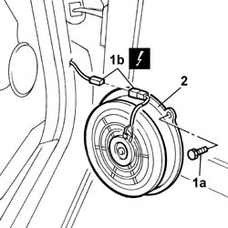

5570T93 Rear side SPEAKER (one), left or right - R.R. with door panel removed
- Path
- Procedures > 55 ELECTRICAL EQUIPMENT > 5570 ACCESSORIES > 5570T CAR RADIO AND CAR TELEPHONE > 5570T93 Rear side SPEAKER (one), left or right - R.R. with door panel removed
- Kind
- repair procedure (removal / refitting; the operation number is the code)
- Applies to
- all engines; all production periods
- Interactive page
- https://sloeber94.github.io/elrnDB-lThss/en/#/150132
Applies to: all engines; all production periods
 Removing
Removing
 Refitting
Refitting1. Undo the fixing bolts (1a) and remove the electrical connector (1b).
 | Description | Connector |
|---|---|---|
1b | Speaker in left rear door | P040 |
| Description | Connector |
|---|---|---|
1b | Speaker in right rear door | P041 |

Applies to: all engines; all production periods
1. Connect the electrical connector for the rear side speaker.
| Description | Connector |
|---|---|---|
1 | Speaker in left rear door | P040 |
| Description | Connector |
|---|---|---|
1 | Speaker in right rear door | P041 |
2. Fit the rear side speaker (2a) in the housing and tighten the fixing bolts (2b).
Topics that link to this page (18)
- 5505B21 REAR DOOR built in WIRING (one) left or right - R.R.
- 7010A04 Rear side door WATER GUARD PROTECTION - R.R. or Position with door panel removed
- 7010A05 Rear side door WATER GUARD PROTECTION - R.R. or Position
- 7010A28 Rear side DOOR CHECK STRAP - R.R.
- 7010C10 Rear side door OUTER HANDLE - R.R. with door panel removed
- 7010C11 Rear side door EXTERIOR HANDLE - R.R.
- 7010C56 Rear door opening device (one), left or right, complete with rod handle/lock - R.R. with door panel removed
- 7010C57 Rear door opening device (one), left or right, complete with rod handle/lock - R.R.
- 7010D14 Rear side door DESCENDING WINDOW GLASS (one), left or right - R.R. with door panel (and mount frame) removed
- 7010D15 Rear side door DESCENDING WINDOW GLASS (one), left or right - R.R.
- 7010D16 Rear side door fixed window glass (one), left or right - R.R.
- 7010D18 Rear side door DESCENDING WINDOW GLASS CHANNEL (one), left or right - R.R.
- 7010D20 Rear side door DESCENDING WINDOW GLASS front GUIDE (one), left or right - R.R. with door panel (and support frame) removed
- 7010D21 Rear side door DESCENDING WINDOW GLASS front GUIDE (one), left or right - R.R.
- 7010M20 Left or right rear door electric WINDOW MOTOR - R.R. with door panel/support frame rmeoved.
- 7010M21 Left or right rear door electric WINDOW - R.R.
- 7010N20 Central locking MOTOR/LOCK ASSEMBLY for one rear door, left or right - R.R. with door panel and support frame removed
- 7010N21 Central locking MOTOR/LOCK ASSEMBLY for one rear door, left or right - R.R.